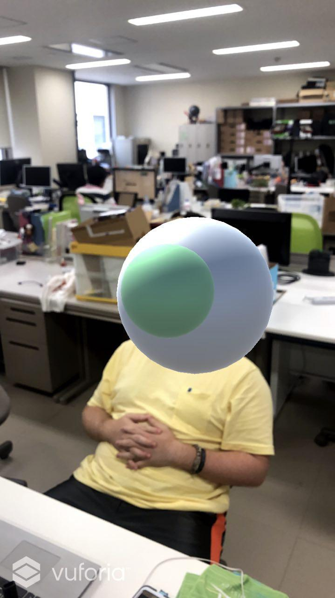
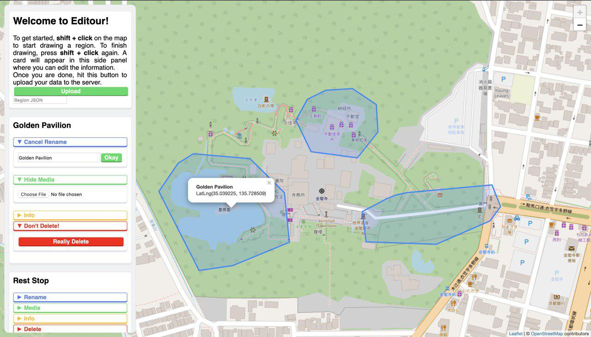

Kyoto VR MQP Team Blog
Week 3 & 4 (8/5 - 8/16): Planes, Trains, and Bike-omobiles
It's been a little while! After last week's post, we decided it might be better if we made bi-weekly posts instead of a new one every week. That way we can spend more time on project work, and put more meaningful content into our blog posts. So, let's get things started with the events of week 3.
This week started off very fun, because on Monday, Atticus took us on a bike tour in Kyoto! We toured specifically the area around Kinkaku-ji, and Kinkaku-ji itself, since that's where the tour for our AR Tour app will guide people. First, when we arrived, Atticus introduced us to another university student friend of his, Hikaru. He explained that Hikaru is working on the same sorts of things we are, and has expressed interest in helping us out on this project however he can! We eventually made our way over to Kinkaku-ji. After first touring the beautiful site casually and getting an idea of what the experience is like, we went back through to gather any important data we could in order to help us build an AR tour for the site. This meant taking pictures of possible image targets, finding usable GPS coordinates for content regions, and listening to the provided audio tour files throughout the route so that we knew where each one belonged. We got a lot of really good data that day, and came up with a lot of great ideas that would direct our work moving forward.
As the week went on, work on the app continued based on the data and ideas obtained on our trip. We spent time getting GPS recognition working in Unity, and eventually made a sample app that could detect whether you were inside one of a set of predefined geographic regions and say which one you are in. This will be important for placing content on the route of the Kinkaku-ji tour. Additionally, we worked on ground plane and mid air AR detection with Vuforia. After our tour of Kinkaku-ji, we realized that there weren't quite as many usable images for AR at the site, meaning that our ability to place AR content throughout the entire route would be limited if we stuck with that method. But we found that Vuforia also supports Ground Plane recognition and Mid Air AR content. So, by the end of the week, we had figured out how to effectively utilize ground plane and mid air recognition to place AR content, thus expanding our range of ways to place AR content on our tour (shown below). Unfortunately, ground-plane detection requires more advanced hardware than simple marker-based AR; between our group's two AR-capable phones, only one can consistently use the ground plane and mid air AR technology, limiting our testing a lot.
Also this week, we began work on the heart/circulation model project that we will be doing with the Ritsumeikan students. On Tuesday and Wednesday night, we had a couple biology lectures to provide us with the basic knowledge we would need to succeed in this project. Then on Friday, we held a meeting to establish what sort of design and model we wanted to go for with this project. We figured out what materials we would need, and who would work on what components, and decided to do our shopping for parts next Monday.
Speaking of next week, let's get started on that! Week 4 started out very fun in the same sort of way as Week 3, because our Monday once again consisted of a travel opportunity in the name of project work thanks to a project advisor. But this time we traveled to Osaka and Nara with Noma-sensei as part of our work on the heart project. We went shopping for parts in Osaka, and got a lot of great materials to fuel our design decisions for our model heart and circulatory system.
The rest of the week was spent back on our AR Tour app. Cole began work on a web app to help with the placement of geographic zones for our tour (shown below). The app allows you to draw a region on the map and name it. The goal is to be able to export the GPS coordinates to the project in Unity. So now, instead of needing to find all of the points and input them to the script manually, it can all be done much more easily and automatically. Joe did some very useful work looking into UI in Unity, particularly for our audio component of the tour. We now have a working scroll bar, allowing you to go to any point in the audio tour file by sliding along the bar. Lastly, I worked on a couple important AR-related features for our application. First, I got model-switching working for ground plane recognition; with Vuforia, you can only have one model available to be placed with ground recognition at a time, but now we have a way to change which model that is inside the app! At first we tried changing Scenes in Unity to do this, but this would cause problems with the AR Camera and AR functionality that were proving too complicated to work around. So instead we went with changing which object was being displayed, and with enough research and trial and error, we were finally able to do it. I also was able to create a feature to disable and re-enable AR functionality. So now if you're outside of one of the designated content zones, the app will stop generating AR content.
On Wednesday, we had a check-in Skype call with Atticus and Hikaru, and Atticus was really impressed with our work! He really likes the direction the project is moving in. He did remind us during the meeting of a couple things to keep in mind. For AR content in the tour, he wants to primarily use images, and not really any 3d models. This should be just as easy to implement, but still important to keep in mind. Also, he explained that he wants the audio tour files to play automatically, allowing the user to walk around and experience the tour without requiring constant phone input. Lastly, he explained that, while the features we've been adding for the extensibility of our application are very cool and appreciated, he wants the tour done first more than anything, and would prefer that features for future development of the tour app be left for after the tour itself is completed.
Here is our plan going forward. Next week, we will be putting some concentrated time and effort into researching UI in Unity in order to create a better, more functional UI for our application. Once that's in place, we want to create an example tour that will take place on campus for testing purposes. Then, the week after next (week 6), we plan to meet with Atticus again in Kyoto for another tour of Kinkaku-ji, where we can finally test out our tour for the site and see how things go. Looking forward to it!